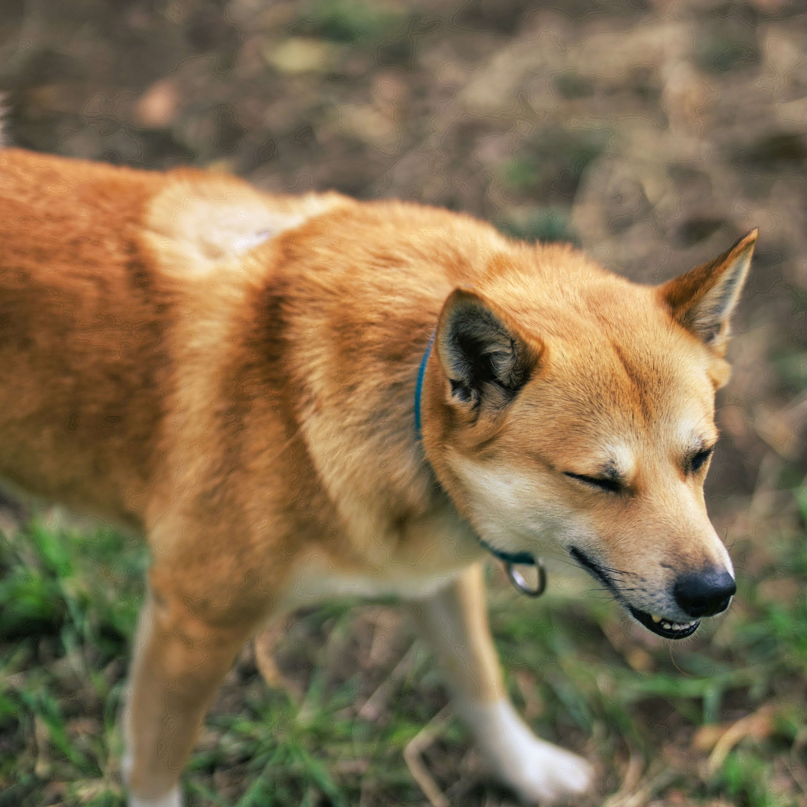
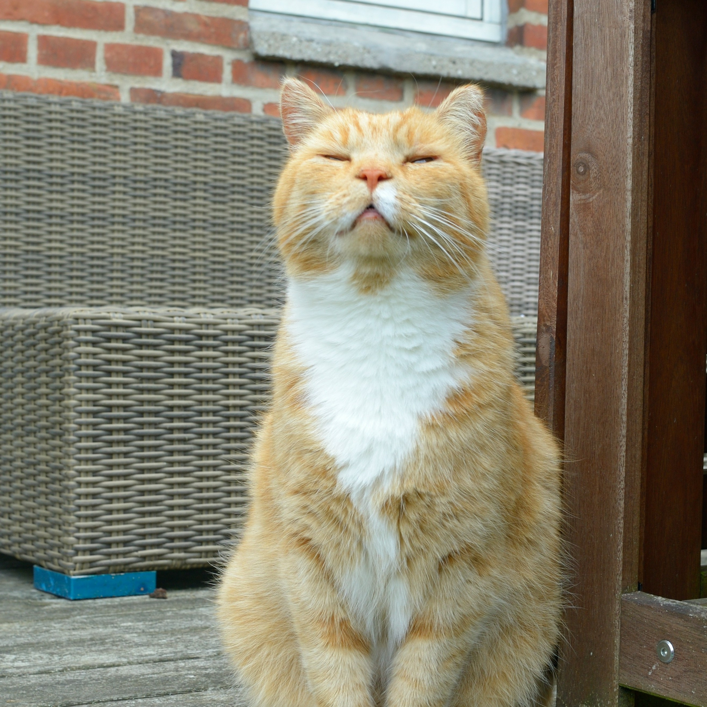

Buddy is a friendly and playful dog looking for a loving home. He enjoys long walks, belly rubs, and spending time with people. Buddy gets along well with children and other pets, and he is always excited to greet you at the door. If you are looking for a loyal companion who will fill your days with joy, Buddy could be the perfect match. Adopting Buddy means giving him a safe and happy home, and in return you get a friend for life.

Luna is a calm and curious cat who loves cozy corners and sunny spots. She is gentle, clean, and easy to care for, and she enjoys quiet company and gentle head scratches. Luna is litter trained and does well indoors. If you are looking for a peaceful and affectionate companion, Luna could be the perfect fit. Adopting Luna means giving her a warm and safe home, and in return you get a soft and loyal friend.